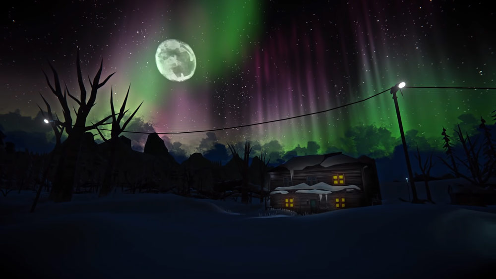

The Long Dark
The Long Dark -- комп'ютерна гра в жанрі симулятора виживання з видом від першого обличчя з елементами відкритого світу, розроблена канадською компанією Hinterland Studio Inc. Альфа-версія игры Альфа-версія гри вийшла 22 вересня 2014 року в рамках раннього доступу в Steam. Розробники отримали фінансування на розробку ігор за рахунок кампанії на Kickstarter у жовтні 2013 року. The Long Dark є дебютним проектом команди Hinterland Studio. Гра отримала позитивні відгуки ще на стадії альфа-розробки. Реліз відбувся 1 серпня 2017 року.
Ігровий процес
The Long Dark розроблена в жанрі виживання з видом від першого обличчя. Локації представляють собою відкритий світ. Дія гри розгортається в дебрях на тихоокеанському побережжі Канади після руйнування самольоту в умовах геомагнітного буря. Ігрок виступає в ролі вижилого пілота. Ігроку доступні три режими гри: «режим історії», «режим виживання», «випробування».

Режим історії
На відміну від режиму виживання, режим історії (також відомий як «Wintermute») – це епізодична пригодницька гра з елементами виживання. Якщо гравець вмирає, вихідний файл збереження не видаляється і гравець може відновити процес гри з попередньої точки збереження. У сюжетному режимі гравець не може вільно переміщатися ігровим світом і обмежений певними географічними регіонами.
Спочатку планувалося, що режим історії буде випущений наприкінці 2014 року, але пізніше його було перенесено на 2016 рік. Зрештою, сюжетний режим гри був випущений у серпні 2017 року з першими двома епізодами із п'яти. Перший епізод був названий "Не йди смиренно", другий епізод - "Світлова фуга".
Через змішані відгуки критиків та гравців, у грудні 2018 року були випущені redux версії першого та другого епізодів з багатьма змінами в ігровому процесі, структурі та подачі місій. Третій епізод вийшов 22 жовтня 2019 року і був названий «Елегія роздоріжжя». Четвертий епізод під назвою «Лють, потім тиша» вийшов 6 жовтня 2021 року.
Режим виживання
-
У режимі виживання гравець може вибрати регіон, де він хоче з'явитися, і може отримати доступ до будь-якого регіону в грі. Мета гри полягає в тому, щоб гравець вижив якомога довше, збираючи та використовуючи будь-які ресурси, які він може знайти у світі. Сюди входять такі предмети, як продукти харчування, вода, дрова, ліки, а також такі інструменти, як зброя, сокири, ножі та багато інших предметів. На локаціях мешкає дика природа: олені, на яких можна полювати у пошуках їжі, а також вовки та ведмеді, які становлять постійну загрозу для гравця, коли вони виходять на вулицю. Всі предмети та дикі тварини з'являються випадково для кожної нової гри, тому для гравця не буде двох однакових ігор. Інструменти та предмети з часом погіршуються, змушуючи гравця приймати ретельні рішення щодо їхнього стану та можливої необхідності ремонту. Вогонь, будучи основним компонентом, необхідний тепла і приготування їжі. Гравець повинен регулярно видобувати дрова та паливо, щоб залишитися живим. Гравець також може померти через харчове отруєння та хворобу.
-
The Long Dark імітує повний цикл дня та ночі, що є фундаментальною частиною гри. Гра також імітує температуру та холодний вітер, спонукаючи гравця постійно уважно стежити за погодою та своїм одягом, щоб запобігти смерті від впливу. Спочатку у грі не було вибору складності, але через велику популярність серед гравців, з оновленнями були додані три складності для різних режимів гри, а четвертий режим складності був доданий пізніше.
-
Система збереження гри забезпечує ретельне ухвалення гравцем рішень; збереження відбувається тільки тоді, коли гравець входить до будівлі, спить, чекає на час або отримує травму. Коли гравець вмирає, вихідний файл збереження видаляється, що змушує гравця розпочати нову гру.
Випробування
Випробування – це один із ігрових режимів, який з'явився у грі з виходом чергового оновлення у 2016 році. За своєю механікою даний режим схожий на режим виживання, але головна відмінність полягає в наявності завдань для виконання. Як тільки персонаж виконає завдання, гра завершується перемогою. Програти у випробуваннях можна двома способами – смертю персонажа та перевищенням відведеного на завдання часу. На даний момент, в грі доступні наступні випробування: «Безнадійний порятунок», «Видобуток: частина 1», «Біла імла», «Кочівник», «Видобуток: частина 2», «Архіваріус», «Поки що мертві сплять», «Escape the Darkwalker»
Розробка
The Long Dark — дебютний проект канадської компанії-розробника ігор Hinterland Studio, сформованої в 2014 році Рафаелем ван Ліропом, який раніше брав участь у продюсуван ні Company of Heroes, управління розробкою оповідання в Far Cry 3 и полном руководстве разработки Warhammer 40,000: Space Marine. Окрім нього до команди входять: Алан Лоранс, технічний директор проектів Saints Row и Red Faction; Хокіо Лім арт-директор League of Legends; Маріанна Кравчик, сценарист серії ігор God of War та Девід Чен, аудіо-продюсер серій Mass Effect и Baldur's Gate. У вересні 2014 року до команди приєднався провідний дизайнер The Elder Scrolls III: Morrowind Кен Ролстон. Персонажів озвучили такі актори, як Марк Мир,
Дженніфер Хейл, Девід Хейтер и Елайас Туфексис.
Критики ще до релізу відзначили, що для виживання гра вимагає чималої вправності, що Рафаель, керівник студії, прокоментував словами
До виходу
Гра отримала багато позитивних відгуків ще на момент альфа-версії гри. У прев'ю гри від журналу Time автор статті Метт Пекхам описав гру чимось «абсолютно романтичним, що знаходиться на стику холоду, смерті, забуття та невідворотної близькості нічної темряви». Шаун Макініс, автор рецензії від GameSpot зазначив, що гра виділяється у жанрі виживання тим, що ігровий процес будується на максимально реалістичних умовах, а не на вигаданій небезпеці зомбі подібно до DayZ або канібалів у The Forest, що також підкреслюється в прев'ю Гріффіна Макелроя від Polygon. Шаун високо оцінив візуальну складову гри, назвавши «прекрасним» поєднання «чистого мінімалізму, яскравих барв та підкреслених країв, що створюють атмосферу жвавого концепт-арту». Але в той же час, як каже рецензент, гра вражає своєю жорсткістю та безкомпромісністю у плані виживання, в якій персонаж може померти від найменшої зневаги одним із багатьох факторів, що впливають на життя людини. Рецензент IGN Майк Махарді назвав це «загрозою з усіх боків», зазначивши, що розробникам Hinterland Studios вдалося створити гру в жанрі виживання, де нарівні із загрозою диких звірів стоїть загроза голодної смерті, перевтоми чи переохолодження. За словами Майка, запорука успішного виживання у світі The Long Dark — це вміння зважити всі за і проти і швидко зреагувати на ситуації, що виникають. Але незважаючи на велику кількість небезпек, продовжує рецензент, сам світ гри не відштовхує, а ставить перед суперечливою красою світу і жорстокістю обставин. Незважаючи на відсутність кінцевої мети, у гравця може виникнути бажання пограти лише через можливість знаходження у цьому суперечливому світі.
Після виходу
Вихід гри з альфа-версії відбувся 1 серпня 2017 року і був сопровожден позитивними рецензіями кількох ігрових видань. Незважаючи на хороше сприяння режиму виживання, сюжетна частина гри отримала змішані оцінки критиків. Зокрема, основна проблема релізної версії являла собою скудне повествование сюжету та її технічний компонент. Російське видання Ігроманія дало грі 6,5 балів із 10, назвавши сюжет «банальним» з безліччю технічних проблем, а режим виживання «чи не єдиним по-справжньому реалістичним в іграх», похваливши атмосферу гри, геймплейну складову, інтерфейс та звуковий супровід. Редакція StopGame похвалила гру за реалізм, атмосферу, систему виживання та різноманітний контент, назвавши сюжетний режим гри «дуже цікавим», поставивши оцінку «дивовижно». Журналісти сайту GameSpot назвали режим виживання, графічну та геймплейну складову «чудовим», критикуючи сюжетну компанію, анімації персонажів. і технічну складову гри в цілому, поставивши грі 6 балів з 10. Енді Келлі з PC Gamer поставив грі 85 балів зі 100, похваливши гру за «глибокий, жорстокий та неймовірно атмосферний світ», геймплей, звуковий супровід та добре написану історію. Ігровий портал Game Informer поставив грі 7.25 балів із 10, похваливши пісочницю, але розкритикувавши сюжетну частину. Зокрема, журналіст Еліза Фавіс охарактеризувала NPC як «посібники для навчальних програм, які навчать вас виживати», графіку як «грань естетики», а геймплей та атмосферу «величними». Незважаючи на позитивні оцінки релізної версії гри ігровими виданнями, багато фанатів виявилися незадоволеними сюжетною компанією. Це призвело до того, що у серпні 2018 року були анонсовані redux версії перших двох епізодів з додаванням нових персонажів, внутрішньоігрових роликів, переробленої структури сюжетної лінії та геймплейних механік.